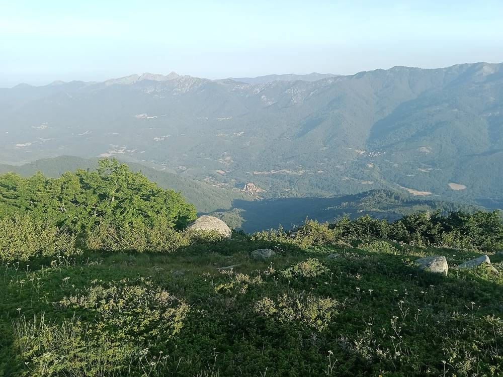

프랑스 코르시카 인구 300명 마을 코자노, 공공건물 지붕 태양광 가동…바이오매스·소수력 이어 세 번째 재생에너지

지붕 약 1,300㎡에 사업비 약 9만 유로, 5만 유로는 코르시카 에너지청 지원…전기는 팔지 않고 공공건물끼리 나눠 쓰는 집단 자가소비, 시장은 건물 전기 사용 약 40% 감소 전망
프랑스 코르시카섬 코르스뒤쉬드 도의 인구 약 300명 마을 코자노(Cozzano)가 공공건물 두 동의 지붕 약 1,300㎡에 태양광 설비를 달고 가동에 들어갔다. 한 동에는 체육관과 약국이, 다른 동에는 위층 학교와 아래층 시청·우체국이 들어 있으며, 마을회관과 어린이집·급식실까지 여러 공공시설이 이 전기를 함께 쓴다. 태양광 전기는 팔지 않고 공공건물끼리 나눠 쓰는 집단 자가소비 방식이라 건물들이 다 쓰지 못하면 생산을 줄이도록 출력을 묶어 두었고, 이를 맞추려고 건물마다 10분 단위 사용량을 분석했다. 사업비 약 9만 유로 가운데 5만 유로는 코르시카 지속가능개발·도시계획·에너지청(AUE)을 거쳐 지원받았으며, 장자크 치콜리니 시장은 해당 건물의 전기 사용이 약 40% 줄고 해마다 4,800~5,200유로를 아낄 것으로 내다봤다. 마을은 이미 공공건물 난방용 바이오매스 보일러와 상수도관·강에 놓은 소수력발전소 2곳을 운영하며 수력 전기를 EDF에 팔아 마을 예산에 보태고 있고, 1989년부터 시장을 맡아 온 치콜리니 시장은 마을이 한 해 200만kWh 넘게 생산해 주택까지 합친 소비(약 100만kWh)의 두 배를 만든다며 "모든 마을이 이렇게 한다면 엄청난 일이 될 것"이라고 말했다. AUE의 크리스티앙 마리아니 기후·대기·에너지 부장은 볕이 잘 드는 지붕과 충분한 전기 수요를 갖춘 마을이라면 이 방식을 따라 할 수 있지만, 규정이 바뀌어 보조금과 남는 전기 판매 가능성을 사업마다 따져 봐야 한다고 밝혔다.
시민에너지 관점
인구 300명 마을이 나무·물·햇빛을 차례로 갖춰 쓰는 전기의 두 배를 만든다는 시장의 계산은, 작은 마을도 에너지를 사 쓰는 곳에서 만드는 곳으로 바뀔 수 있다는 점을 보여 준다. 작은 지자체가 몇 해씩 걸리는 인허가와 사용량 분석을 감당하기 어렵다는 우려가 있지만, 코자노는 지역 에너지청의 조사비와 행정 지원으로 그 문턱을 넘었고, 독일 바이에른주의 작은 마을 빌트폴츠리트도 주민이 출자한 풍력과 집집의 지붕 태양광, 농가 바이오가스를 하나씩 늘려 마을이 쓰는 것보다 몇 배 많은 전기를 만들어 왔다. 설비가 마을 것일 때 수력 판매 수입이 마을 예산으로 돌아오듯 에너지의 이익이 지역에 남고, 다음 과제는 그 몫이 공공건물을 넘어 주민의 살림에까지 닿게 하는 일이다. 우리도 읍·면의 공공건물 지붕과 마을 공유자원부터 지역이 소유하는 발전소로 묶고, 작은 지자체 곁에서 조사와 행정을 거들 지역 에너지 지원 조직을 서둘러 갖춰야 한다.
출처: Corse Matin 2026-11-03 Ange-François Istria 원문 보기
仏コルシカ島の人口300人の村コッツァーノ、公共施設の屋根で太陽光発電を開始…バイオマス・小水力に続く3つ目の再生可能エネルギー
屋根約1,300㎡、事業費約9万ユーロのうち5万ユーロはコルシカのエネルギー庁が支援…電気は売らずに公共施設同士で分け合う集団自家消費、村長は施設の電力使用が約40%減ると見込む
フランス・コルシカ島コルス＝デュ＝シュッド県の人口約300人の村コッツァーノ（Cozzano）が、公共施設2棟の屋根約1,300㎡に太陽光発電設備を設置し、稼働を始めた。1棟には体育館と薬局が、もう1棟には上階に学校、下階に村役場と郵便局が入っており、集会所や保育所とその給食室まで、複数の公共施設がこの電気を共同で使う。太陽光の電気は売らずに公共施設同士で分け合う集団自家消費方式のため、施設が使い切れない場合は発電を抑えるよう出力が制限されており、これに合わせるため施設ごとの10分単位の使用量を分析した。事業費約9万ユーロのうち5万ユーロはコルシカ持続可能開発・都市計画・エネルギー庁（AUE）を通じて支援を受け、ジャン＝ジャック・チコリーニ村長は対象施設の電力使用が約40%減り、年4,800～5,200ユーロを節約できると見込んでいる。村はすでに公共施設の暖房用バイオマスボイラーと、上水道管と川に設けた小水力発電所2か所を運営し、水力の電気はEDFに売って村の予算に充てている。1989年から村長を務めるチコリーニ氏は、村が年200万kWh以上を発電し、住宅を含めた消費（約100万kWh）の2倍を生み出していると述べ、「すべての自治体がこうすれば、とてつもないことになる」と語った。AUEのクリスティアン・マリアーニ気候・大気・エネルギー部長は、日当たりのよい屋根と十分な電力需要がある村ならこの方式をまねできるが、規制が変わったため補助金や余剰電力の売電の可能性を事業ごとに精査する必要があると述べた。
市民エネルギーの視点
人口300人の村が木・水・太陽を順にそろえ、使う電気の2倍をつくっているという村長の試算は、小さな村もエネルギーを買う側からつくる側へ変われることを示している。小さな自治体には数年がかりの許認可や使用量分析は荷が重いとの懸念もあるが、コッツァーノは地域のエネルギー庁による調査費と行政面の支援でその壁を越えた。ドイツ・バイエルン州の小さな村ヴィルトポルツリートでも、住民が出資した風力と各家庭の屋根の太陽光、農家のバイオガスを一つずつ増やし、村が使う量の何倍もの電気をつくってきた。設備が村のものであれば、水力の売電収入が村の予算に戻るようにエネルギーの利益が地域に残る。次の課題はその分け前を公共施設の外、住民の暮らしにまで届けることだ。韓国でも邑・面の公共施設の屋根や村の共有資源から地域が所有する発電所としてまとめ、小さな自治体のそばで調査と行政を手助けする地域エネルギー支援組織を急いで整えるべきだ。
出典: Corse Matin 2026-11-03 Ange-François Istria 原文を読む
法国科西嘉岛300人小村科扎诺公共建筑屋顶光伏投运…继生物质和小水电之后的第三种可再生能源
屋顶约1,300㎡，项目投资约9万欧元，其中5万欧元由科西嘉能源署资助…电力不出售、由公共建筑之间共享的集体自发自用，村长预计相关建筑用电减少约40%
法国科西嘉岛南科西嘉省人口约300人的小村科扎诺（Cozzano），在两栋公共建筑约1,300㎡的屋顶上装设光伏设备并投入运行。一栋楼里有体育馆和药店，另一栋楼上层是学校、下层是村政府和邮局，村民活动厅、托儿所及其食堂等多处公共设施共同使用这些电力。光伏电力不出售，而是由公共建筑之间共享的集体自发自用，因此设备出力受到限制，建筑用不完时就减少发电；为此，村里按10分钟间隔分析了每栋建筑的用电量。项目投资约9万欧元，其中5万欧元通过科西嘉可持续发展、城市规划与能源署（AUE）获得资助，村长让－雅克·奇科利尼预计相关建筑用电将减少约40%，每年可节省4,800～5,200欧元。村里此前已运营公共建筑供暖用的生物质锅炉，以及分别建在饮用水管道和河流上的两座小水电站，水电出售给法国电力公司（EDF），收入也补贴村里的预算。自1989年起担任村长的奇科利尼表示，村里每年发电超过200万千瓦时，是包括住宅在内全村用电量（约100万千瓦时）的两倍，并说：“如果所有市镇都这样做，那将非同凡响。”AUE气候、空气与能源部主任克里斯蒂安·马里亚尼表示，屋顶日照良好、用电需求充足的村镇可以复制这一模式，但由于规则已有变化，每个项目都需要仔细评估补贴和余电出售的可能性。
市民能源视角
按村长的估算，一个300人的小村依次用上木材、水和阳光，发出的电是自身用量的两倍，这说明小村庄也能从买电的一方变成发电的一方。有人担心小型地方政府难以承担耗时数年的审批和用电分析，但科扎诺借助地区能源署提供的调研经费和行政支持跨过了这道门槛；德国巴伐利亚州的小村维尔德波尔茨里德也由居民出资建设风电，再逐步增加家家户户的屋顶光伏和农户沼气，发电量达到全村用电量的数倍。设备归村庄所有，能源收益才会像水电售电收入回到村预算那样留在当地，下一步的课题是让这份收益走出公共建筑、惠及居民的生活。韩国也应从邑、面的公共建筑屋顶和村庄共有资源做起，把它们整合为地方所有的发电站，并尽快建立在小型地方政府身边协助调研和行政的地方能源支援机构。
来源: Corse Matin 2026-11-03 Ange-François Istria 查看原文
Corsican village of 300, Cozzano, switches on rooftop solar on public buildings after biomass and small hydro
About 1,300㎡ of roofs and roughly 90,000 euros, 50,000 of it through Corsica's energy agency; the power is not sold but shared among public buildings as collective self-consumption, and the mayor expects the buildings' electricity use to fall by about 40%
Cozzano, a village of about 300 people in Corse-du-Sud on the French island of Corsica, has put into service solar panels on about 1,300㎡ of roof across two public buildings. One houses the sports hall and pharmacy, the other the school upstairs and the town hall and post office below, and a range of public facilities, including the village hall, the crèche and its canteen, share the power. Because the solar electricity is not sold but shared among public buildings as collective self-consumption, the system's output is capped so that production is cut back when the buildings cannot use it all, and each building's consumption was analysed in ten-minute intervals to size it. Of the roughly 90,000-euro cost, 50,000 euros came through Corsica's agency for sustainable development, planning and energy (AUE), and Mayor Jean-Jacques Ciccolini expects the buildings' electricity use to drop by about 40%, saving 4,800 to 5,200 euros a year. The village already runs a biomass boiler heating public buildings and two small hydro plants, one on the drinking-water network and one on a river, selling the hydro power to EDF in a way that also feeds the municipal budget. Ciccolini, mayor since 1989, said the village produces more than 2 million kWh a year, twice the roughly 1 million kWh consumed including homes, adding, "If every commune did this, it would be enormous." Christian Mariani, head of climate, air and energy at the AUE, said villages with well-exposed roofs and enough electricity demand can copy the model, but changing rules mean subsidies and the chance to sell surplus power have to be examined project by project.
Citizen Energy View
The mayor's estimate that a village of 300, by adding wood, water and sun in turn, produces twice the electricity it uses shows that even a small village can turn from a buyer of energy into a producer. Some worry that small municipalities cannot handle permits and consumption studies that take years, but Cozzano got over that hurdle with study funding and administrative help from a regional energy agency, and the small Bavarian village of Wildpoldsried in Germany has, step by step, added resident-financed wind turbines, rooftop solar on homes and farm biogas until it produces several times the electricity it uses. When the equipment belongs to the village, the benefits stay local, just as hydro sales flow back into Cozzano's budget, and the next task is to let that share reach beyond public buildings into residents' household budgets. Korea, too, should start with the roofs of public buildings and shared village resources in rural towns, bundle them into locally owned power plants, and quickly build regional energy support bodies that help small municipalities with studies and paperwork.
Source: Corse Matin 2026-11-03 Ange-François Istria Read the original